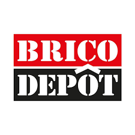

Digital Consultant · B2B SaaS and Consumer Brands Jul 2023 – present · Barcelona
Prismic.io · Created ABM content like whitepapers, landing pages and newsletters. Worked with Product Marketing, Partnerships and Design to define positioning and messaging for marketing decision makers 🎯.
VÃntegris · Fixed and scaled the marketing database in HubSpot. Cleaned and structured leads, automated reports and built dashboards so sales and marketing could act on data 📊.
Proquinat · Led the digital rebrand and new website. Produced SEO content, automated HubSpot lead reports and optimized the funnel to increase qualified B2B leads 🐍.
PlaqueOff · Designed and rolled out a content strategy for new product launches. Mixed SEO and organic social to grow awareness and education in pet oral health 🐶.
Keywords
B2BSaaSContent MarketingABMSEOCRMLanding PagesGrowth MarketingCopywritingProduct Marketing

Drinks&Co Store · Mobile Marketing and Product Owner Dec 2021 – Jun 2023 · Barcelona
I worked on two apps in parallel 📱.
Bodeboca · After a relaunch, app sales grew from 18% to 21% of total revenue. I led migration, defined vision, roadmap and positioning with customer insights, and coordinated sales, marketing, design and development. Growth came from CRM with push, acquisition with Google UAC and Apple Search Ads, and better messaging and ASO. Post launch I set KPIs, tracked funnels in Appsflyer, ran A/B tests on UX UI and led QA.
Drinks&Co · Supported the go to market in five countries 🌍. Implemented CRM flows, campaigns and event tracking. Worked on payments, UX UI analysis and feedback loops to move from MVP to a scalable product.
Keywords
B2CEcommerceProduct OwnerMobile App MarketingCRMASOUX UIData AnalyticsA/B TestingAgile
Academons · Mobile Marketing and Growth May 2020 – Dec 2021 · Barcelona
Small EdTech SaaS startup after COVID. Goal was to improve retention for a homeschooling app. I boosted engagement and frequency of use with rewards calendars, gamification and personalized messages 👩‍🏫. I also ran low budget acquisition in Meta Ads, Google Ads and Apple Search Ads, tested Telegram as a growth channel, worked with influencers, created social content, and improved onboarding and CRM flows.
Keywords
SaaSB2CEdTechSubscriptionAcquisitionCRMUser RetentionInfluencersGrowth
MAM Baby Spain · Digital Marketing Manager Jun 2018 – May 2020 · Barcelona
I was responsible for all digital marketing in Spain 👶. I adapted the corporate website and the MAM Brushy Time app to the Spanish market, and managed the CMS to keep content updated. A highlight was growing the social media community by more than 50% organically through useful parenting content and collaborations with maternity and healthcare influencers. I also managed Instagram and Facebook, produced newsletters, ran campaigns with partners such as Mi Bebé y Yo, supported launches with online ads and banners, and created post sale materials for pharmacy partners.
Keywords
FMCGHealthcareSocial MediaInfluencersEmail MarketingPaid MediaCMSLocalizationContent Marketing
Kern Pharma · Digital Marketing Manager Nov 2016 – May 2018 · Terrassa
I was part of the Communications department and managed all digital communication for three companies 💊. I defined and executed the content strategy for web and blog with copywriting, SEO and product positioning, coordinated 15+ stakeholders, and ranked “ibuprofeno†on Google page one for months. As Project Manager I led the migration of four corporate websites to Liferay with stakeholder management, content migration, SEO for multiple countries, backlog management and QA. We launched on time and on budget with a unified presence and product catalog. This role positioned me as a bridge between communication, marketing and IT, with a focus on KPIs and performance.
Keywords
HealthcarePharma MarketingB2CSEOContent MarketingCopywritingStakeholder ManagementAnalyticsDigital Strategy

Brico Depôt Spain & Portugal · Digital Marketing Manager Apr 2015 – Oct 2016 · Barcelona
I led the company’s first steps into digital 🛠️. The goal was a new website with a catalogue of 35,000+ SKUs across 28 stores. I defined product strategy and roadmap, managed the API for mass product uploads and aligned stakeholders inside the Kingfisher Group. I designed the first digital strategy with content, email, banners and performance campaigns, managed a €200K annual budget, launched the first monthly online catalog with dynamic pricing per store, and implemented KPIs. This became the base for future ecommerce and omnichannel growth.
Keywords
RetailB2CEcommerceDigital StrategyEmail MarketingCatalog ManagementKPIsPerformance Marketing

Agencies (Tinkle & Territorio creativo) · Social Media and Digital Strategy Jul 2013 – Mar 2015 · Barcelona
I worked in agencies where I grew from community management to analytics and finally to strategy 📢. I launched the social channels of DIA España with customer care flows. I launched Gas Natural Fenosa channels, integrating customer care with a strict 30 min SLA, and managed a 5 person team. I also worked on social listening and brand reputation with Augure, managed content production, ran digital PR and collaborated with influencers. Clients included Novartis, Danone, Nestlé Bebé, Veet, Pastas Gallo, Font Vella, La Sirena, granini, Servihabitat and tommee tippee.
Keywords
AgencyFMCGB2CDigital PRInfluencersCommunity ManagementTeam Leadership